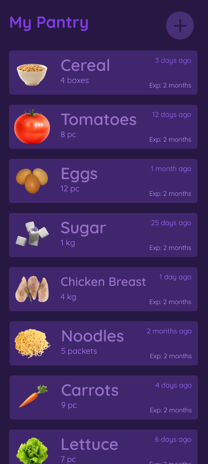
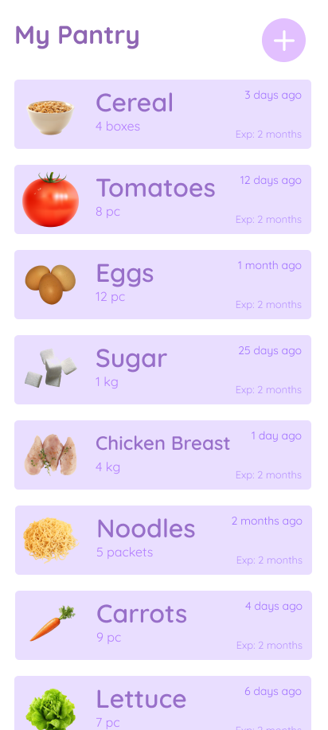
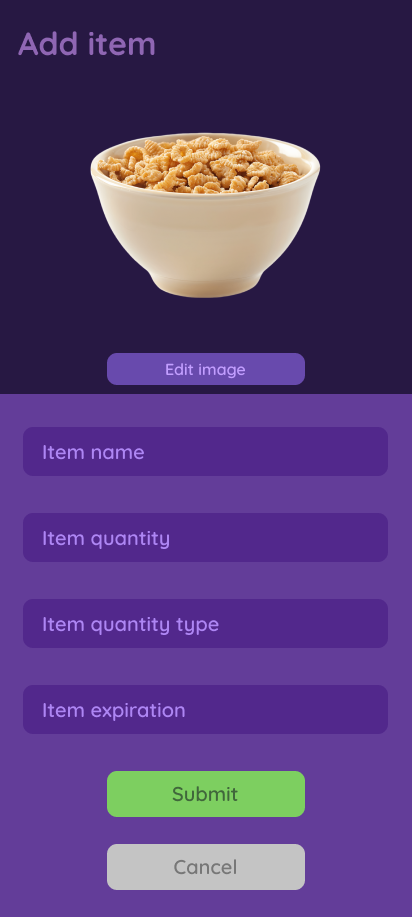
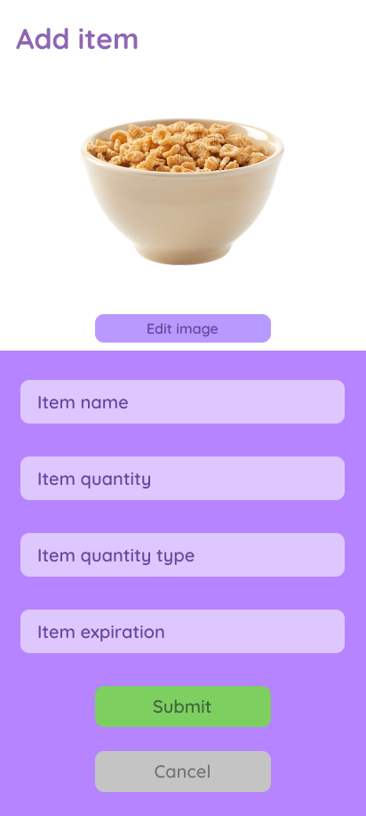
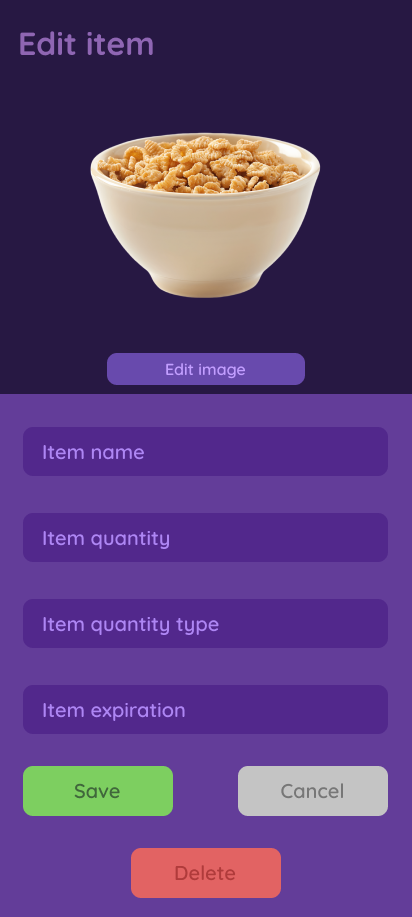
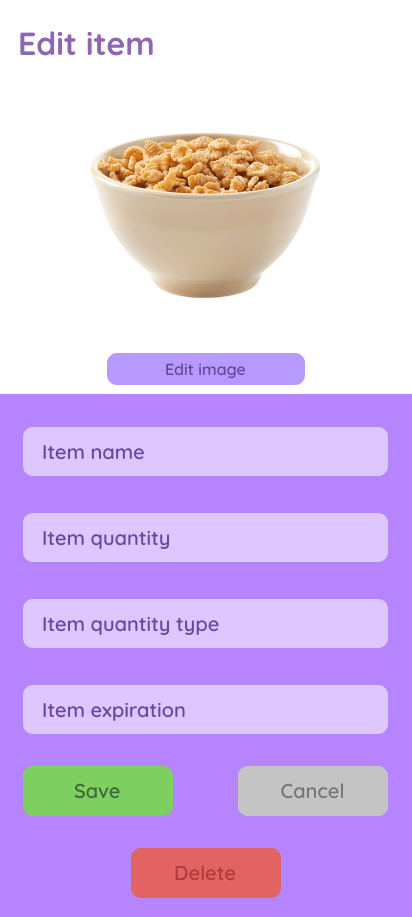

A cross-platform mobile app that keeps track of everything in your cupboards: what you have, how much of it, when you added it, where you were and when it expires. It uses four of the phone's own hardware features: the camera, vibration, text to speech and GPS.
Every screen comes in light and dark. Switch the page's theme and the screens switch with it.
Home
The welcome screen, with the crystal ball mascot. Light mode is a bright blue-to-violet gradient; dark mode fades from deep purple to midnight blue.
Enter gives a 100 ms buzz, says “Enter pantry page” if text to speech is on, and opens your pantry.
The gear icon opens Settings, where you switch dark mode and text to speech.
The theme is re-applied every time the screen appears, so changing it in Settings takes effect straight away when you come back.
Known quirk: the dark gradient can look slightly “choppy” (colour banding). That's how .NET MAUI draws dark gradients rather than something the app can fix, and it doesn't happen in light mode.


My Pantry
Everything you've stocked, one card per item: its photo, name, quantity and unit, the date it was added, where it was added and when it expires.
The list is loaded from the phone's SQLite database each time the screen appears, so it's always up to date after adding, editing or deleting.
Tap an item to feel a buzz, hear it read back (“Tomatoes, 8 pieces, Expiry: …”) and open it for editing.
The + button opens Add item.


Add item
A photo at the top and a short form underneath. The form sits on its own coloured panel, so it reads clearly in both themes.
Edit image asks whether to take a photo with the camera or choose one from the gallery.
Quantity types are pieces, kg, g, lbs and ml, and the expiry date picker won't let you choose a date in the past.
Leave a required field empty and it turns red until you fill it in.
Your location is detected when the screen opens and stamped on the item.
Every field buzzes and, with text to speech on, announces itself when you tap into it.


Edit item
The same form, filled in with the item you tapped, and Save, Cancel and Delete buttons in place of Submit.
Saving checks the same required fields, then updates the item in the database.
Delete always asks for confirmation first, and reads the question aloud: “Are you sure you want to delete cereal?”
You can retake or re-pick the item's photo here too.
Try it
The app, rebuilt for your browser
The real app runs on phones, so here's a web recreation of its pantry, add and edit screens. It behaves like the app and uses your browser's versions of the same hardware: take or pick a photo, feel the buzz on an Android phone, hear items read aloud, and tag them with your location. Everything stays on your device and resets when you reload.
My Pantry
Your pantry is empty. Tap + to add something.
Select Image Source
Hardware
Four features from the phone itself
The app uses .NET MAUI's cross-platform APIs, so the same C# code works with the camera, vibration motor, speech engine and GPS on Android, iOS and Windows.
Camera & file picker
Every item can have a photo. Edit image offers Take Photo or Choose from Gallery, and the result is shown straight away and saved with the item. If the camera isn't available or permission is refused, you get a friendly “Camera Error” alert instead of a crash.
A short buzz confirms every tap: 100 ms for the big actions (Enter, Save, Delete) and 50 ms for lighter ones like opening an item or tapping into a field. It's wrapped in error handling, so phones without a vibration motor just carry on.
Vibration.Default.Vibrate()
Text to speech
An accessibility option, off by default. When it's on, buttons and fields announce themselves and items are read back in full, like “Added tomatoes, 8 pieces, Expiry: 12/10/2026”. One small service checks the setting before speaking, so each screen only has to call a single method.
TextToSpeech.SpeakAsync()Preferences.Get()
GPS location
When you add an item, the app asks for permission, takes a high-accuracy reading and turns it into a city name with Google's Geocoding API, so the item is stamped “📍 Manchester”. If the lookup fails it falls back to the coordinates, and if permission is refused the item is saved as “Unknown location”.
The Settings screen has two switches. Both are saved on the phone, so they're remembered the next time the app opens.
Dark mode fades the screen out, swaps every colour and fades back in, 200 ms each way. Every screen applies the theme again when it appears, so the whole app follows along.
Text to speech confirms itself out loud. Switching it off says “Text to speech turned off” before going quiet, so you're never left wondering whether it worked.
This settings card is a working copy: it controls this page, and it remembers your choice too.
Settings
Accessibility
Dark mode
Apply a darker theme
Text to speech
Converts text to audio
Other
Room to grow: this section is ready for future options.
Under the hood
How it's built
One C# codebase, compiled for Android, iOS, Windows and macOS with .NET MAUI.
HomeWelcome screen
gear icon
SettingsDark mode, text to speech
Enter
My PantryReads every item from SQLite
+ button
Add itemPhoto, GPS, validation
tap an item
Edit itemSave, cancel, delete
Models/PantryItem.cs
public classPantryItem
{
[PrimaryKey, AutoIncrement]
public int Id { get; set; }
public string Name { get; set; }
public string Quantity { get; set; }
public string Image { get; set; }
publicDateTime DateAdded { get; set; }
public string ExpirationInfo { get; set; }
public string QuantityType { get; set; }
public string LocationInfo { get; set; }
public string DisplayQuantity => $"{Quantity} {QuantityType}";
}
Services/TextToSpeechService.cs
public static classTextToSpeechService
{
public static asyncTask SpeakAsync(string text)
{
bool isTtsEnabled = Preferences.Get("TextToSpeechEnabled", false);
if (isTtsEnabled && !string.IsNullOrWhiteSpace(text))
{
awaitTextToSpeech.SpeakAsync(text);
}
}
}
Stored on the phoneItems live in a local SQLite database (sqlite-net-pcl) in the app's data folder, so it works offline and needs no account. One method handles both inserting and updating.
Always up to dateScreens reload in OnAppearing, so returning from Add or Edit shows the change straight away without any extra wiring.
Themes in codeThe pantry cards are built in C# with a DataTemplate, so their colours can be swapped along with the rest of the screen whenever dark mode changes.
Friendly validationMissing fields turn red and reset the moment you type, and the expiry picker's minimum date is today, so there's no way to add something that's already expired.
Read the code
The full .NET MAUI project, with every page, service and platform folder, is on GitHub.